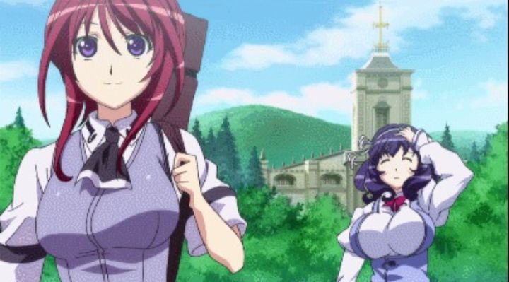

Disclaimer: This review covers 37 episodes of "The Qwaser of Stigmata," including the 24-episode 1st season, the 12-episode 2nd season ("The Qwaser of Stigmata II") and the OVA.Sexy fanservice has been a staple in anime for as long as I can remember. At some point, it practically became its own genre; there's a bunch of fanasty-action or romantic-comedy anime where the main reason to watch it is to see bouncing boobs on display. In the early 2010's, studios slowly got more daring, pushing the line for what could be broadcast on Japanese television, bluring the line between a normal show and hardcore porn. One of the earlier shows to push those limits is 2010's "The Qwaser of Stigmata.""Stigmata" doesn't pull back much: its plot can be summarized as a fantasy-action where the hero much suck on boobs to replenish his power. Set in Japan (but with a heavy Russian-Christianity influence), a secret war is brewing between "Qwasers" and "Heretics," as they seek a hidden sacred Church icon, said to be a gateway to the power of God. That icon is most likely hidden on the grounds of a high-school's Church. The main heroines, Mafuyu and Tomo, come across Sasha (also known as Alexander, among other nicknames), a Russian boy trained from a young age to be a strong fighter and Qwaser, someone capable of controlling one of the basic elements (Iron in his case; other Qwasers can control Gold, Copper, etc.). To feed this power, both Qwasers and Heretics need "soma," the franchise's made-up word for a girl's breast-milk. Typically accompanied by a female collegue (a "Maria"), these warrirors will stop mid-battle to strip the girl and suck on their nipples. Yes, it's an utterly stupid excuse to make boobs a plot point. Soma is apparently better from virgin girls too, hence why teenagers tend to be subjected to this (early on, the Heretic villains kidnap high school girls to take this power). Better still if from large breasts, among other factors. This makes Tomo a particularly valuable asset, since her breasts are massive, and she becomes a prime target for enemies and for possession from supernatural spirits. Frustrating, since she's a whispy airhead with little personality beyond those knockers. Eventually, the more interesting Mafuyu gets her chance to be acknowledged as an important ally in her own way... accompanied and explained by her breasts growing in size. Almost all of the nearly-all-female cast have large boobs, aside from a couple side characters, whose entire personality is how depressed they are for being flat-chested.To say that this is demeaning to women is probably an understatement. It's not just the erotic factor, but rather that women are treated as vessels, containers and producers of something used by the real heroes (men, and also women) to fight. In this show, they're no different from cows that can talk. It would have been nice if they had something... anything.. else to provide in the conflict. Anyway, yes, there's a lot of bare, bouncing breasts, lactating from all the explicit boob-sucking. There are some episodes where a girl will be buck-naked for the entire broadcast. There's also a fair bit of panty-shots, skimpy outfits, and S&M bondage and torture. One of the ally Qwasers, Ekaterina, is a sadistic lollita goth who enjoys manipulating her soma supply, reaching into their underwear and treating them as slaves, often to their enjoyment. Yes, the most perverted characters in the show are women, and there's a lot of girl-on-girl foreplay, both suggested and explicit. Also a lot of girls wetting themselves or outright peeing, due to all the excitement. It's a shame since "Qwaser of Stigmata" actually does have a plot and some promising lore, even if it's weighed down by too many made-up words and phrases. Sasha is initially cold due to his harsh past, but slowly grows to be more open when his role as a Qwaser is known to the rest of the school. There's a fair bit of character development, and you probably wouldn't guess where people ended up by the mid-point and the end. As an erotic-fantasy, even the boob-sucking seems normal after a while, but too much erotic-comedy is pushed to prevent one from truly taking the show seriously.  That "normalization" is a problem on its own. Yes, as explicit as boob-sucking might seem (even a decade later; this review was written in 2021), I didn't notice it after the first several episodes. Both Sasha and other characters seem to simply strip down any girl that's nearby with little warning. In a much later episode, a girl takes this more personally, feeling "soiled" for the sudden act. The big antagonist in that arc was also stockpiling unconcious girls to suck and throw away like juice boxes. It was only then that I was reminded: this is not a normal thing to do. This is not OK. This is kind-of gross. But is this genre, would it successfully turn on audiences? Probably. In fact, the tone and quality of the fantasy-comedy isn't far off from some of the more ambitious anime porn out there. But if you've gone this far, you'd probably be better satisfied with that legit, explicit porn, rather than this softcore stuff."Qwaser" is also 37 episodes long, when a short 12 would have sufficed. It's technically made up of two seasons (a 24-episode first season, plus an OVA in the middle of it, and the 12-episode second season), but the arcs are divided well enough to pretend there's three. Assuming that, the "second" and "third" season each start with a drastic change to keep things interesting: first turning Sasha temporarily into a younger boy that's tricked into thinking he's supposed to be a girl, and then having a grown Sasha dress convincingly as a woman to hide in an all-girls school. These changes only last for a few episodes before going back to normalcy. Even "Stigmata II," which at first seems like an interesting epilogue of a continuation, keeping some characters, forgetting others, and adding new ones, doesn't take long to go back to a familiar status-quo. A bigger committment would have been cool plot-wise. The OVA feels like a normal episode... strangely, there's a comedy-spin-off episode near the end of "Stigmata II" that feels like a real OVA in how irrelevant and bizarre, but kinda fun, it is.The visuals in "Qwaser" are fine, and even cool looking as anime tends to be, but ultimately generic to a fault. Like most anime near 2010, it's stuck in a no-man's land where it looks older than it really is. Animation is good in some of the fight scenes, but limited in others, and remains limited outside fights (of course, boob-bouncing gets a lot of animation attention). The music, and Japanese-only acting (no dub), are both fine."The Qwaser of Stigmata" pushed explicit-content norms for anime in 2010, likely allowing for subsequent shows like "The Testament of Sister New Devil," "Prison School" and many others to follow suit. It's still shockingly explicit today, doing nearly everything but on-screen sex, and perhaps only because there weren't enough adult-male characters in the series. For the most part, the characters are likable and understandable enough (perversions aside), and the fantasy-action is reasonable, as is the comedy. But none of these elements are better or different than average, and the fixation on boobs is ridiculous to the point of distraction, and is likely to seriously offend some viewers. Even if you're looking for sexy, you'd admit this is just silly in the wrong ways.
- "Ani" More reviews can be found at : https://2danicritic.github.io/ Previous review: review_The_Promised_Neverland Next review: review_The_Rabbi's_Cat